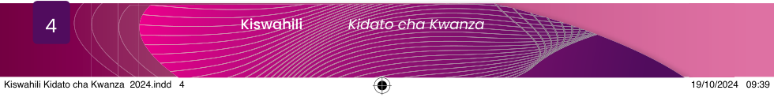

Taasisi ya Elimu Tanzania
Malengo pate fikia, wote kushirikiana, Kiswahili ninatamba, hakuna wa kunishinda.
Majina pia mavazi, vyote vyanitegemea, Shughuli jamii hizi, lugha hii zatumia, Kiswahili ni mzizi, kuunganisha jamia, Ondokana na simanzi, kubali kunitumia, Kiswahili ninatamba, hakuna wa kunishinda.
Mimi nimekubalika, katika hii dunia, Rasmi ni kutumika, kote kule Tanzania, Duniani na Afrika, nimeweza kuendelea, Kiswahili chasifika, lugha ya kimataifa, Kiswahili ninatamba, hakuna wa kunishinda.
Maswali
1.Shairi ulilolisoma linazungumzia nini?
2.Sifa gani za Kiswahili zimebainishwa katika shairi hilo?
3.Unafikiri Kiswahili kina sifa gani nyingine tofauti na alizozieleza mwandishi?
4.Mstari unaosema, “Kiswahili ninatamba, hakuna wa kunishinda” una maana gani?
Zoezi la 1. 1
1.Fafanua mawazo makuu mawili yaliyowasilishwa katika ubeti wa pili wa shairi ulilosoma.
2.Eleza hadhi ya Kiswahili kama ilivyofafanuliwa katika shairi.
